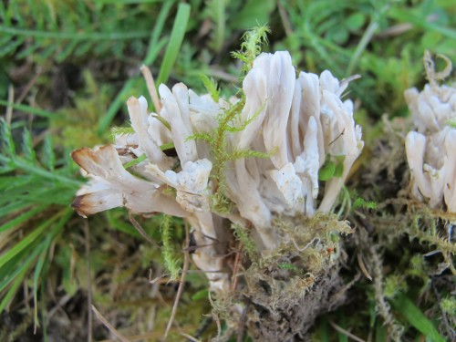
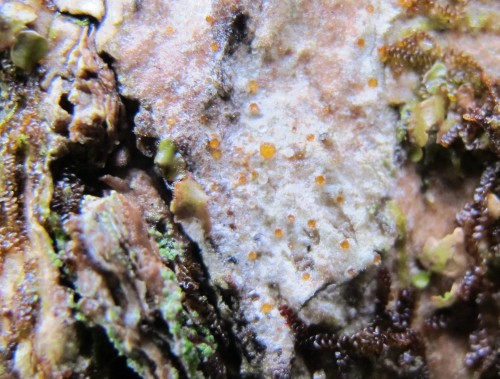
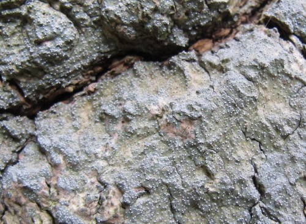
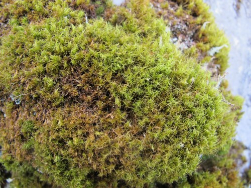

En fargerik samling beitemarkssopp funnet i
kalkrik naturbeitemark på Møkster i Ho Austevoll 27.09.2013.
Praktrødspore Entoloma bloxamii i
kalkbarskog, NT Steinkjer: Handbåggå-åsen 09.09.2013. Dette er en
kravfull art som kan vokse i kalkskog og kalkrike enger.
Entoloma rubrobasis fra utkant av naturbeitemark, NT Namdalseid:
Ulvensetran 11.09.2013. Dette er en lite kjent rødspore-art.
Entoloma testaceum fra moserik naturbeitemark, NT Steinkjer:
Kvikksåssetran 10.09.2013. Dette er også en lite kjent rødspore-art med
få tidligere funn i landet, men den er trolig oversett, for det ble
gjort 4-5 funn i Nord-Trøndelag i år.
Slimjordtunge Geoglossum difforme funnet
i naturbeitemark Ho Bømlo: Lykling, Tverborgvika 29.09.2013. Arten er
meget sjelden og kan være en norsk ansvarsart.
Brunsvart jordtunge Geoglossum umbratile
funnet i naturbeitemark, Ho Bømlo: Lykling 29.09.2013.
Tinnvokssopp Hygrocybe canescens i
naturbeitemarksflekker i godt skjøtta kystlynghei ved lyngheisenteret,
Ho Lindås: Lygra 26.09.2013. Arten er meget sjelden og kan være en norsk
ansvarsart.
Rødnende lutvokssopp Hygrocybe ingrata
vokser her i en kystnær, gjengroende naturbeitemark, NT Nærøy: Hestvika
15.09.2013.
Skifervokssopp Hygrocybe lacmus i
slåttemark, NT Namdalseid: Liasetran 11.09.2013.
Sauevokssopp Hygrocybe ovina i grasflekk
i kalkrik kystlynghei, NT Leka: Skeisneset, Vottvika 14.09.2013. Dette
er ett av de nordligste funnene av denne sørlige arten.
Svartdogget vokssopp Hygrocybe phaeococcinea
i naturbeitemark, NT Meråker: Vassvollen (Øvre Forra) 29.08.2013.
Russelærvokssopp Hygrocybe russocoriacea
i naturbeitemark NT Leka: Skeisneset, Mellomtjørna sør 14.09.2013. Denne
arten er kalkkrevende og vokser sent om høsten. Den er vanligst på
skjellsandflekker langs kysten, bl.a. på beita strandberg.
Brunøyet vokssopp Hygrocybe virginea var.
fuscescens i naturbeitemark på kalkrik setervoll, NT Levanger:
Håvesvollen (Øvre Forra) 30.08.2013.
Grå narremusserong Porpoloma metapodium i
gammel naturbeitemark, Ro Rennesøy 28.09.2013. Dette kan også være en
norsk ansvarsart.

Buskgelésopp Tremellodendropsis tuberosa
i naturbeitemark, NT Namdalseid: Eldbrenna 12.09.2013. Dette er en
sjelden art som gjerne forekommer i naturbeitemarker.
Vranglodnetunge Trichoglossum walteri i
naturbeitemark, Ho Bømlo: Lykling 29.09.2013. Dette kan også være en
norsk ansvarsart.
Lavarter på edellauvtrær
Degelia cyanoloma på gammel ask, Ro Tysvær: Pyttane 14.05.2013. Dette er
en relativt nybeskrevet lavart som finnes på trær og berg på
Vestlandskysten.
Gomphillus calycioides på styva ask, Ho Fusa Femangerlia 25.05.2013. Dette er
en meget sjelden, oseanisk lavart som er oppført som CR (kritisk truet)
på rødlista 2010.
Almelav Gyalecta ulmi på styva alm, MR
Nesset Eikesdalen, Stranda, 07.01.2013. Arten er typisk på gammel
sprekkebark av alm, men kan også forekomme på ask.

Gyalecta truncigena på styva ask, Ho Etne Bjelland 10.05.2013. Arten er
knyttet til gamle edellauvtrær i varme, boreonemorale områder i
Sør-Norge.
Kranshinnelav Leptogium burgessii på
styva ask, Ro Forsand Bergelia 17.10.2013. Dette er en oseanisk lavart
på edellauvtrær mm.
Prakthinnelav Leptogium cochleatum på
styva ask, Ho Etne Bjelland 10.05.2013. Dette er en sjelden, oseanisk
lavart som ofte vokser på gammel ask.

Opegrapha vermicellifera på gammel ask, Ho Etne Frettestranda 09.05.2013.
Rund porelav Sticta fuliginosa på gammel
ask, Ho Tysnes: Reksteren, Sagdalen 13.06.2013. Det er sjelden å finne
denne fertil som på bildet.
Sopparter på edellauvtrær
Lindekullsopp Biscogniauxia cinereolilacina
på grov lindelåg i edellauvskog, Ho Granvin: Beggevik 26.05.2013.
Hasselkullsopp Hypoxylon fuscum på gammel
hassel, Ho Etne: Frettestranda 08.05.2013.
Kullsopp-arten Hypoxylon petriniae på død
ved av gammel ask, Ho Etne: Tungesvikstranda 12.05.2013. Denne arten er
nokså sterkt knyttet til ask og kunne godt ha hett ”askekullsopp” på
norsk.
Ohleria modesta på død ved av gammel alm, MR
Aure: Soleimdalen 15.11.2013. Dette er en uanselig liten pyrenomycet som
vokser i ganske tette klynger på død ved. Den må mikroskoperes for å
artsbestemmes.
Lindeknapp Platygloea disciformis på
nylig nedramla grein av lind, Ho Etne: Frettestranda 09.05.2013.
Indigobarksopp Terana caerulea på død
askegrein i edellauvskog, Ho Etne: Bjelland 10.05.2013.
Bredt stubbehorn Xylaria polymorpha på
grov eikelåg, Ro Forsand: Lerang 15.10.2013.
Hjortegnag på gammel, styva alm, Ho Samnanger:
Skardsvatnet 23.05.2013. Hjorten er en trussel mot alm og ask på
Vestlandet.
Sopp og lav på osp og rogn
Amphisphaerella dispersella på bark av
gammel osp, MR Aure: Soleimdalen 15.11.2013. Dette er en uanselig liten
pyrenomycet som vokser på grov bark av gamle ospetrær. Det er bare noen
få gamle funn fra Norge fra tidligere. Den må mikroskoperes for å
artsbestemmes.
Kystfiltlav Pannaria rubiginosa på gammel
osp, MR Molde: Brenslefjellet 12.01.2013.
Stor fløyelslav Megalaria grossa på
gammel osp, MR Molde: Brenslefjellet 12.01.2013.
Gul pærelav Pyrenula occidentalis på rogn
i humid furuskog, Ro Strand: Svinesmarka 16.10.2013. Denne regnes som en
god indikator på temperert regnskog.
Oseaniske moser
Heimose Anastrepta orcadensis på
steinblokk i regnskog, Ro Forsand: Lerang 15.10.2013.
Vasshalemose Isothecium holthii på
steinblokk ved bekk i regnskog, Ro Forsand: Bergelia 17.10.2013.
Småhinnemose Plagiochila punctata på
steinblokk i regnskog, Ro Forsand: Lerang 15.10.2013.
Pungmose Saccogyna viticulosa på
strandberg ut mot havet, MR Herøy: Golleneset 20.04.2013.

Kystsigd Dicranum scottianum på berg i
temperert regnskog, Ho Os: Bjørnen 27.05.2013.
Planter
Skjellrot Lathraea squamaria i vestvendt,
varm edellauvskog, Ho Bømlo: Spyssøya 11.05.2013.
Snau vaniljerot Monotropa hypopitys ssp.
hypophegea i kalkbarskog, NT Steinkjer: Handbåggå-åsen 12.09.2013.
Tromsøyentrøst Euphrasia hyperborea i
kalkrik myr, NT Levanger: Heglesvola (Øvre Forra) 28.08.2013, bestemt av
Anders Lyngstad.